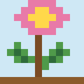

สวนพฤกษศาสตร์ไทย
สวนพฤกษศาสตร์ไทยบัวหลวง



- ชื่อไทย
- บัวหลวง
- ชื่อวิทยาศาสตร์
- Nelumbo nucifera
- วงศ์พืช
- Nelumbonaceae
- ประเภทพืช
- ไม้ดอกไม้ประดับ
ลักษณะทั่วไป
ไม้น้ำล้มลุก มีเหง้าอยู่ในโคลน ใบและดอกชูพ้นผิวน้ำ
ลักษณะทางพฤกษศาสตร์
ใบกลมใหญ่ มีก้านยาว ผิวใบไม่เปียกน้ำ ดอกใหญ่สีชมพูหรือขาว ฝักเป็นรูปกรวยมีเมล็ดฝังอยู่ในฝัก
ถิ่นกำเนิดและการกระจายพันธุ์
พบในเอเชียและบางส่วนของออสเตรเลียตอนเหนือ
สภาพแวดล้อมที่เหมาะสม
น้ำนิ่งหรือน้ำไหลช้า มีแสงแดดเพียงพอ
วิธีปลูกและดูแล
ปลูกในภาชนะหรือบ่อที่มีดินเหนียวและน้ำลึกพอเหมาะ ให้ได้รับแดดอย่างน้อยครึ่งวัน
ส่วนที่นำมาใช้ประโยชน์
ดอก ใบ เมล็ด เหง้า และสายบัว
การนำไปใช้
ดอกใช้บูชา เมล็ดและสายบัวใช้เป็นอาหาร ปลูกประดับสระน้ำ
สรรพคุณหรือประโยชน์
ใช้เป็นไม้ประดับน้ำและพืชอาหารท้องถิ่น
คุณค่าทางวัฒนธรรม
ในวัฒนธรรมไทยบัวหลวงเกี่ยวข้องกับการบูชาในพุทธศาสนา
ข้อควรระวัง
ควรล้างและปรุงสุกก่อนกินสายบัวและเมล็ด และเก็บจากแหล่งน้ำที่สะอาด
เกร็ดความรู้
ใบบัวมีผิวที่ทำให้หยดน้ำกลิ้งหลุดจากใบได้ง่าย
แหล่งอ้างอิง
ข้อมูลในหน้านี้เรียบเรียงเพื่อการเรียนรู้และยังไม่ได้ตรวจสอบทีละรายการกับเอกสารต้นฉบับ โปรดตรวจสอบเพิ่มเติมจาก Plants of the World Online และ สวนพฤกษศาสตร์สมเด็จพระนางเจ้าสิริกิติ์ ก่อนนำไปอ้างอิงในรายงาน